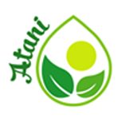

Sản phẩm matcha chất lượng tốt nhất khi được làm từ các lá trà gần ngọn nhât, nơi tập trung các chất dinh dưỡng quý của trà xanh. Lá trà ngọn giàu cholorophyll – chất diệp lục nổi tiếng với khả năng thải độc cơ thể, có màu xanh lá tươi. Càng về thấp hơn so với ngọn, lá trà càng cho màu sắc matcha ngả sâu hơn về vàng. Các lá trà già hơn chứa ít hơn các acid amin đặc trưng, tạo được ít hơn vị ngọt hậu lưu lại trên lưỡi, tăng thêm vị đắng của trà.
|  | Màu Sắc | Độ giàu dinh dưỡng | Mùi thơm trà xanh | Vị Đắng |
|---|---|---|---|---|
| Matcha 01 | ● | |||
| Matcha 02 | ● | |||
| Matcha 03 | ● |
Hiện nay Atani cung cấp 3 sản phẩm matcha: Matcha 01, Matcha 02 và Matcha 03. Theo thứ tự, được sản xuất từ lá trà thu hoạch lần thứ nhất, thứ hai và thứ ba trong năm (tương ứng với tên gọi vụ xuân, vụ hè và vụ thu). Càng về cuối năm, dinh dưỡng quý trong matcha càng giảm, kéo theo vị đắng tăng lên và màu sắc ngả vàng.